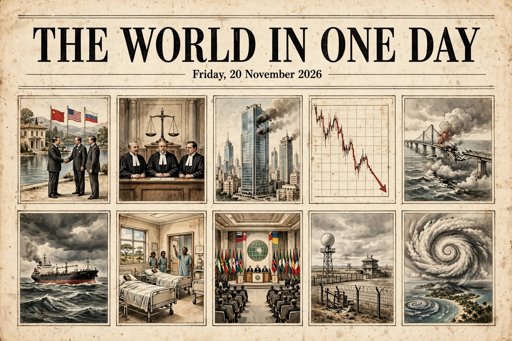

make.fun · news-image-20261120
Friday, 20 November 2026 — ten stories, one poster. A trilateral summit in Shenzhen, a genocide ruling in The Hague, a missile over Riyadh, a record IPO against a market slide, and a cyclone gathering over the Pacific.

entry.png.Each panel of the poster is one story from 20 November 2026, researched from the day's reporting.
The three leaders signed a four-point “peace declaration” — nuclear war “cannot be won and must never be fought”, UN reform, energy security, immunity for state officials — with no mention of Ukraine or Iran and no timetable. European allies meeting in Berlin warned against a “Yalta 2.0” decided over Ukraine's head.
The International Court of Justice ruled 9–6 that Myanmar committed genocide against the Rohingya — the first time the court has found a state guilty of genocide.
Houthi missiles struck the capital's financial district, damaging the Public Investment Fund tower and other buildings.
Anthropic closed about 17% above its IPO price on its Nasdaq debut — while the Nikkei fell 4.8%, Taiwan's index plunged more than 2,200 points intraday, and US stocks fell for a fifth straight day on AI-bubble fears.
Ukraine struck the Kerch bridge for the third time in a week, halting rail traffic. Russian strikes on Kyiv killed three people and damaged the Austrian and Dutch embassies; Poland investigated unknown objects near its border with Ukraine.
Tanker attacks in the Strait of Hormuz intensified. The Pentagon put the cost of the Iran war at $48.3 billion, and the US Senate rejected an Iran war-powers resolution, 51–48.
Kenya discharged its final Ebola patient, 37 days after the outbreak's first case — the outbreak is over.
At COP31, African negotiators sought tripled climate finance while Europe urged focus on existing pledges; Venezuela touted AI as a path to cleaner oil production.
President Trump announced a posthumous pardon for the late baseball star Pete Rose, MLB's all-time hits leader.
Advisories forecast 50-knot winds from Cyclone Xavier by 22 November as it tracks toward the Cook Islands; Fiji declared a national drought disaster under El Niño, and a migrant boat capsized off Senegal, killing four.